这次来杭州，没有去西湖。但杭州够大，大到一条中山中路就能走出好几个故事，一家酒吧能把整座城的气质装进一杯酒里。
抵达·入夜
夜里到的杭州。从高铁站出来，空气带着江南特有的湿意，不算太冷，却有种说不清的温柔感。落脚的地方就在中山中路边上——那条从南宋皇城延伸下来的老街。
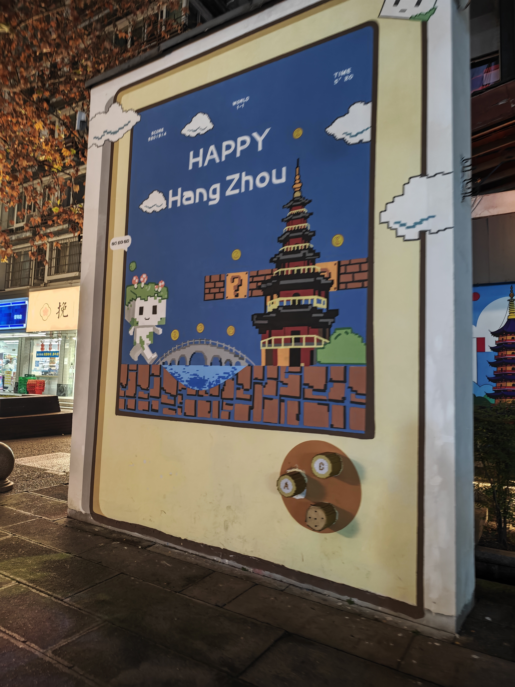
街角的像素画把杭州变成了马里奥关卡，雷峰塔成了最终 Boss 城堡
街角有一面巨型像素风装置牌，把雷峰塔画成了马里奥关卡里的场景，杭州的吉祥物踩着砖块跑过断桥。我在那里站了好一会儿，觉得这城市挺会玩自己的文化梗。
夜深了，街上还有人。Valentine酒吧的原木外廊亮着暖灯，二楼的栏杆上站着一对新婚夫妇在拍照，婚纱在冬夜的风里轻轻晃。走过去，走过那条弄堂尽头发光的"杭州"大字——被填满了西湖、钱塘、雷峰塔的图案，字里面藏着整座城。

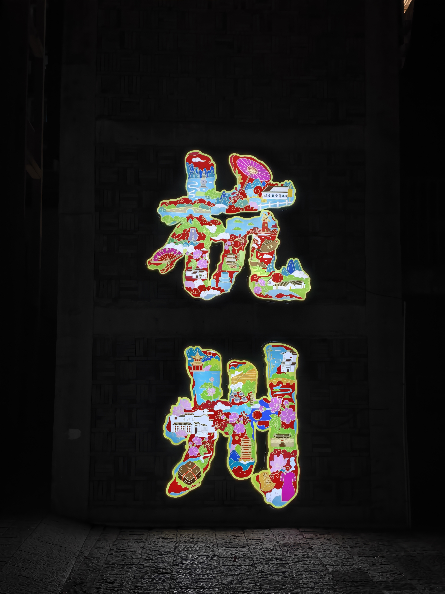
肚子提醒我该吃东西了。拐进王二面馆，要了一碗炒拌川——面条裹着酱汁，加了豆芽和青菜，朴实但够味，一碗下去整个人都暖了。
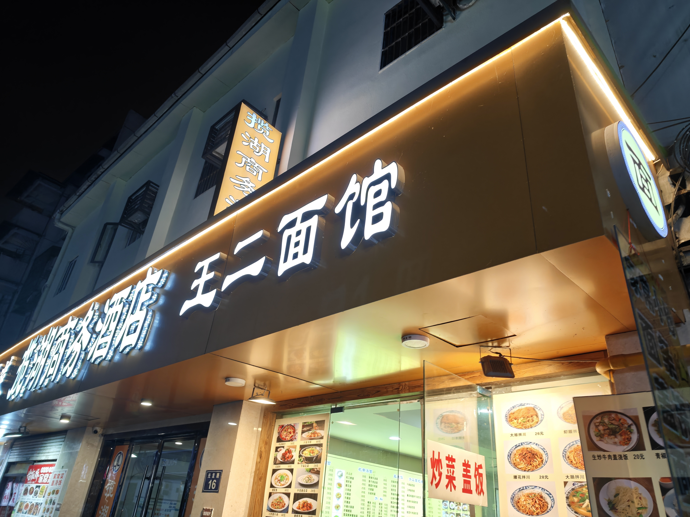

吃完不想回去，顺着中山路再往前走，遇到了一整排的炭烧羊肉砂锅——十几只陶锅一字排开，架在炭炉上，白雾蒸腾，整条街都是那个味道。冬夜的烟火气，真的很难抵抗。

中山中路 336 号，十几只陶锅一字排开，是整条街最诚实的暖意
清晨·清河坊
早起，专门找了游埠豆浆。这是建德游埠古镇走出来的品牌，店面藏在清河坊一条不太起眼的巷子里，门口台阶、木牌匾、老城区的气息扑面而来。豆浆厚实，加了油条，配着热气吃下去，整个胃都安定了。

清河坊里最低调的早餐，却是最踏实的开始
早饭后去泮芳香买煎饺。这是来杭州必打卡的地方，队伍排得老长，等待的人在门口挤着，热气腾腾的锅贴底面煎得焦黄，撒了一层红椒粉，拿到手里还烫，边走边吃才是正确打开方式。

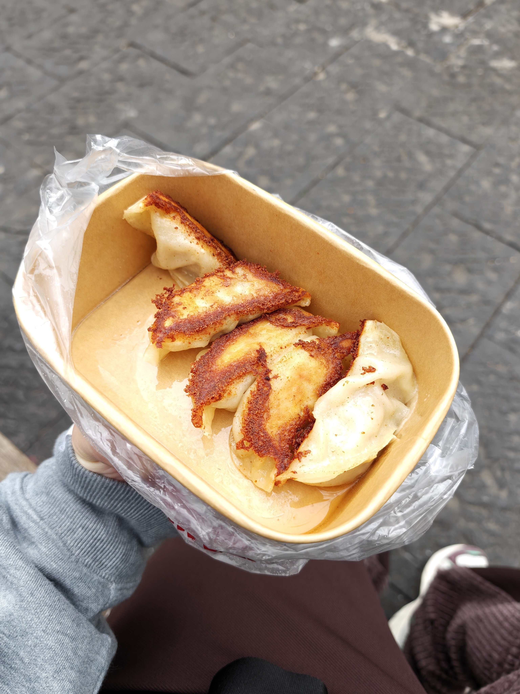
清河坊的街道上，老建筑和新店铺挤在一起。二师兄的店门口摆着一头戴红花的猪仔造型，卖的是酱肉干货；旁边清末永泰百货的旧址上，一家混合了维多利亚风的糖果铺贴着侍者人偶，橙金的门面在冬日里格外显眼。


白天的中山中路下起了小雨，梧桐树的落叶铺在湿润的石板上，撑伞的行人慢慢走过老式骑楼。这条路平时的样子，比任何精心布置的打卡点都更像杭州。

冬雨，石板湿，梧桐叶落尽——这才是南宋御街最本来的样子
上午·鼓楼与铜像
早饭后沿中山路向南走，遇到了鼓楼——城墙砖砌的拱洞，上头是「镇海楼」和「朝天门」的牌匾，灰瓦飞檐，厚实地压在整条路的尽头。站在城墙脚下，一抬头就是宋朝的尺度。


再往前，街角有一组大型青铜群像，骑马的将领旗帜猎猎，步卒手持武器从岩石中涌出，底座刻着「壮哉山河」。这种气概放在街头，路过的行人反而习以为常，只有外来者会停下来多看两眼。

铜铸的将士在梧桐枯枝间矗立，把历史堂堂正正地摆在街头
午前·云栖竹径
如果说这次杭州之行有一个意外之喜，那一定是云栖竹径。
从市区坐车出来，路越来越窄，城市渐渐褪去，换成山林气息。进了竹径景区，踩着碎石铺就的山路，两侧的毛竹一下子就把天空遮住了——竹秆笔直冲上去，细密的竹叶在头顶汇成一片绿色穹顶，光从缝隙里漏下来，落成散碎的斑点。

一条石板路，两侧竹海，这是云栖竹径最标准的样子，但看到真实的依然会屏息
亭子里立着「云栖竹径」四字的题字碑，书法飘逸，碑面已有些岁月的痕迹。林子很深，静得能听见自己的脚步声和偶尔的鸟鸣。走进去，走深了，整个人就慢下来了。


走完竹径出来，感觉身上沾了一层竹林的气息，整个人反而更安静了。这种「被自然按了暂停键」的感觉，是任何城市景点都给不了的。
下午·黑神话朝圣
这次来杭州，有个私心——去艺创小镇的黑神话官方零售店。


店就在中国美术学院国家大学科技园旁边。路口指引牌是纯黑色的，印着鸱鸮——那只鸟头人面的怪物展翅停在枯枝上，配着竖排"黑神话"三个字，气场拉满。

鸱鸮——游戏里鸟头人面的怪物，在现实里依然令人屏息
进店之前先感受了一下艺创小镇的自然景观——废弃采石场改造的山谷水景里，青绿色的水面被峭壁夹住，一只粉色兔子雕塑端坐在岩石顶端，背后是两栋现代楼宇，说不出的违和又和谐。

废弃采石场里的绿水、峭壁与粉兔子，一种奇异的当代美学
店里的陈列像一个微型的西游博物馆。入口铺满概念原画，虎先锋骑着大虎的精细摆件震住了我。还有牛魔王的巨型站像，铠甲和毛发的每一处细节都是匠心，盯着看十分钟不嫌多。


土地公的手办按颜色排了三个版本：金色、铜色、蓝色，神情一模一样，憨态可掬地伸着手。透过二楼走廊探出身子的天蓬元帅，骨瘦如柴，手持禅杖，挂在那里像真的从画里爬出来。
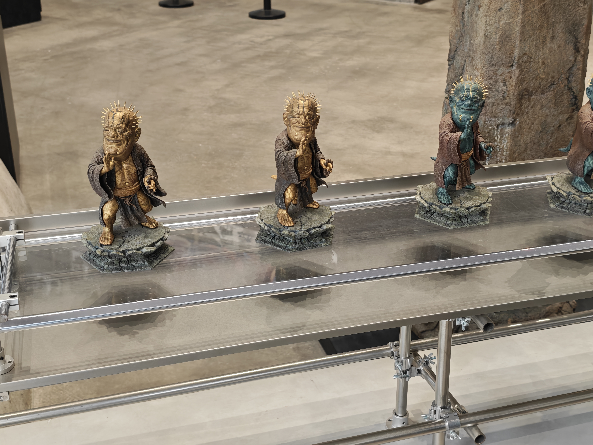


二楼整面墙是概念图和原画，"BLACKMYTH"的字从中间破墙而出，像游戏通关之后的彩蛋画廊，我在那里举着手机，一张接一张地拍，停不下来。
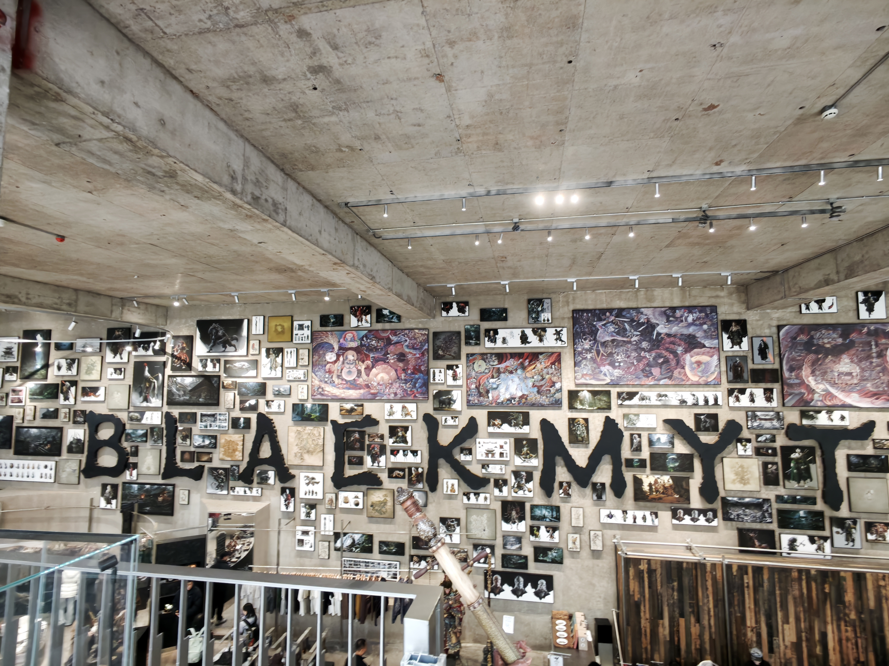
密密麻麻的原画挂满整面墙，游戏世界观的冰山一角
战利品是必须的。买了一袋「黑子戏」零食，拎着印悟空的购物袋，还点了一杯打印了女妖面孔的定制咖啡——咖啡杯套上印着悟空的脸，喝的时候总觉得有人在盯着你。
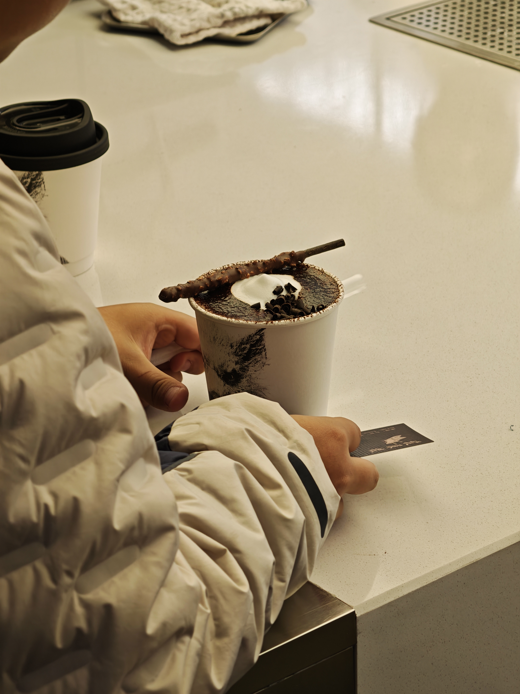
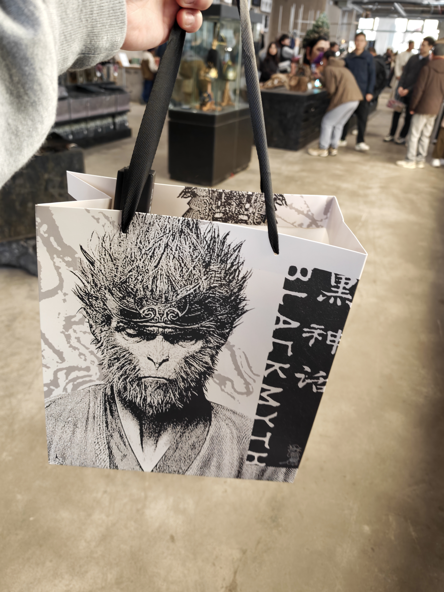
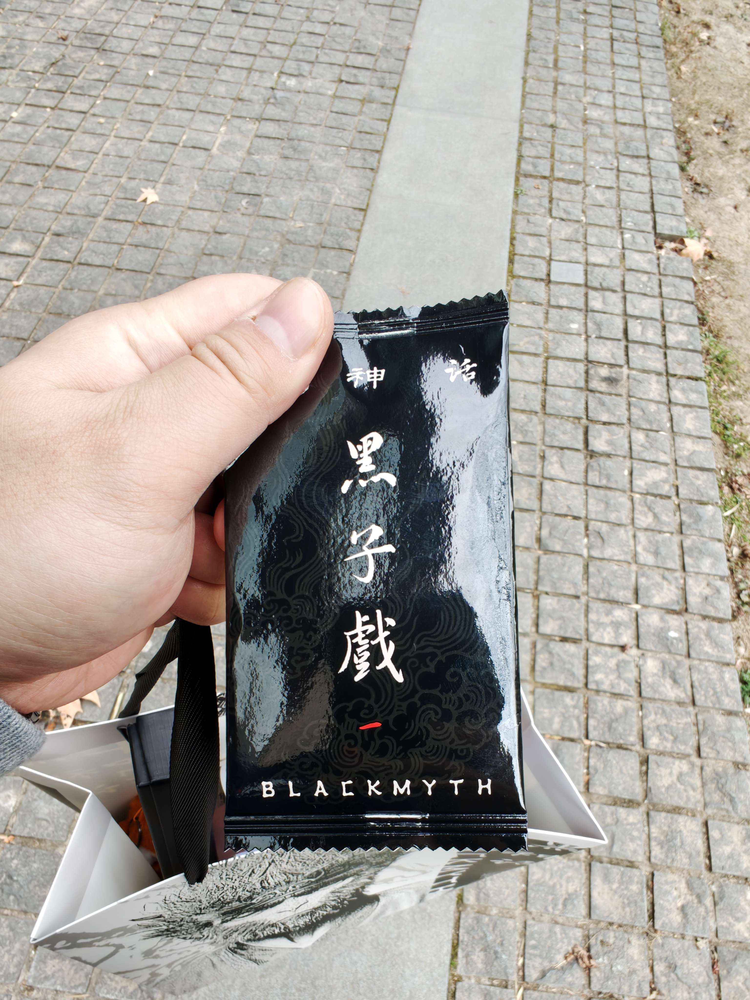
傍晚·面与咖啡
从艺创小镇出来，找到了条态小馆。做的是台州菜，特色家烧——不是精致餐厅的路子，是那种有点油烟气、用料扎实、味道直接的家常功夫菜。点了招牌家烧，酱汁浓厚，配上一壶红茶，吃得踏实。
同一天下午还去了苏面坊，点了一碗蟹黄面——金黄的蟹黄堆在面上，汤底鲜甜，是杭州秋冬季节才有的那种时令味道，值得专程去吃一次。


吃完饭绕去资董窝玺喝咖啡。玻璃门面朝着街道，里面折叠椅几张，菜单密密麻麻写在玻璃上。点了杯瑰夏——「Certificate of Authenticity」摆在台面上，是巴拿马艾利达庄园的限量批次，有编号。

.jpg)
.jpg)
Inspire（窄口）增厚感留香，Excite（宽口）扩甜感增润滑——同一杯咖啡，不同容器，风味真的不同
服务员拿出一张卡片，详细说明了窄口杯（Inspire）和宽口杯（Excite）在甜感、香气、余韵、酸质上的差异，还递来两只不同杯型让我分别品。这杯咖啡被认真对待了，我也跟着认真起来。
- 地址杭州市 · 清河坊附近，菜单写在玻璃门上，别走错
- 推荐瑰夏（Geisha）限量批次，配真品证书，有编号
- 体验可以要求用两种杯型分别品鉴，门道很深
- 气质极简、专注、克制——精品咖啡该有的样子
傍晚·我在西湖
说「这次来杭州，没有去西湖」——其实是骗你的。
咖啡喝完，天色将暗未暗，鬼使神差地走到了西湖边。湖滨步行街上空悬着一块巨型LED屏，红色大字：「我在西湖」。I AM AT WEST LAKE。人人都在抬头拍，但拍完之后，大家还是不由自主地转过头，看向湖的那一边。
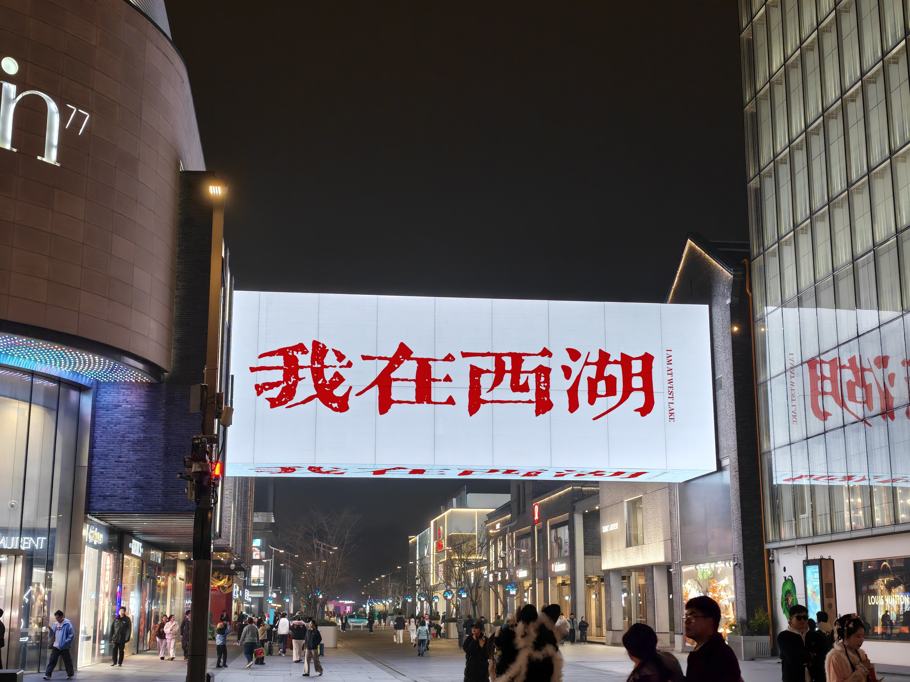
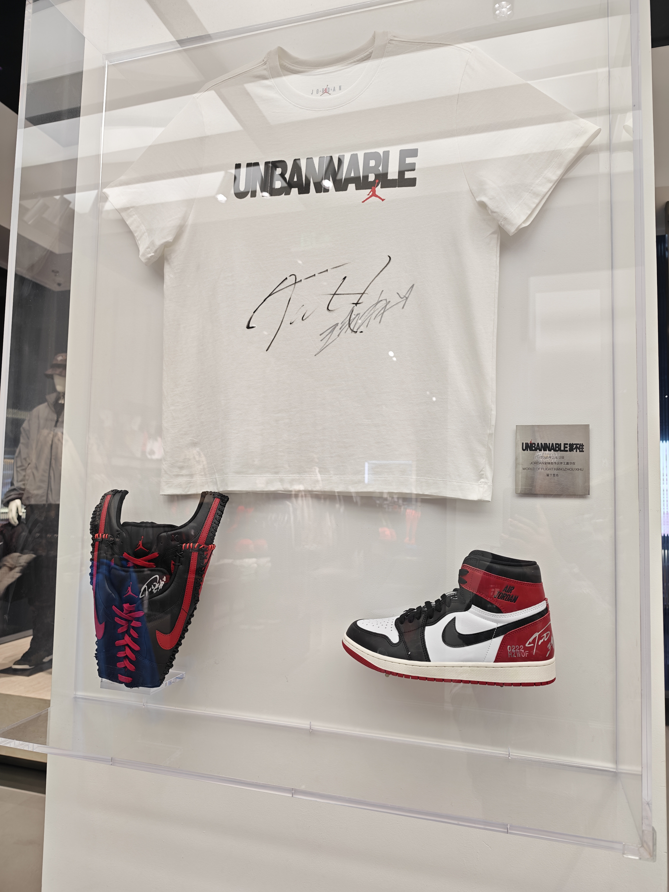
步行街的LEGO旗舰店橱窗里，有人用积木拼出了整个西湖：雷峰塔高高立着，三潭印月的石灯笼浮在水面，西湖的地标被一块一块拼成了玩具，却比许多宣传照更让人感受到这座城市的自豪。

一砖一瓦拼出来的雷峰塔和三潭印月，认真程度远超大多数纪念品
Jordan的橱窗里挂着「UNBANNABLE 禁不住」的签名球鞋和T恤，步行街把各种文化符号混在一起，古典与潮流并排站着，谁也不觉得奇怪。旁边有一个巨型铜色金属球雕塑，镂空处露出内部的山水纹样，在紫粉色灯光的渲染下显得像一件当代艺术装置。

走到湖边，已经全黑了。断桥打着暖黄的灯，倒影浮在湖面，行人在桥上变成了剪影。更远处，宝俶塔的橙色灯光从山顶亮起，整片湖岸的树也被打了光，倒映在水里，成了另一个世界。这一刻忽然觉得，西湖最好的样子，大概就是这个——没有任何刻意，只是一座城市在夜里放松下来的样子。
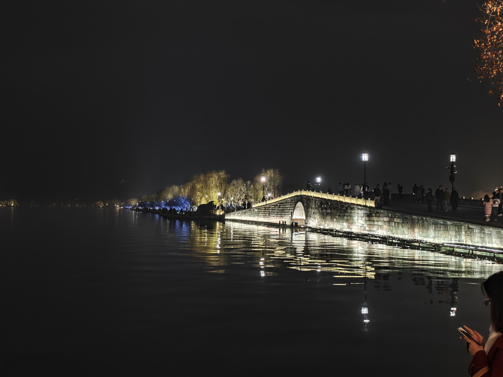
断桥的夜——不是那个白娘子等许仙的传说，只是冬夜里的一座桥
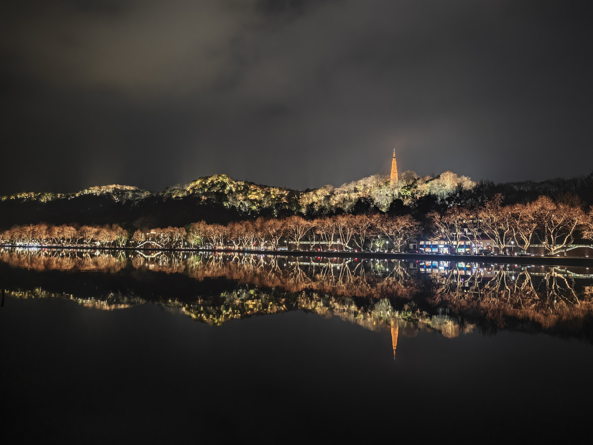
宝俶塔橙光映在湖里，树影成排，水天一色——这一刻的西湖不需要任何滤镜
深夜·灵魂的毒药
Hope Bar 在西湖边不远处。门口招牌画着一个醉倒在马天尼杯里的小人，写着「酒是灵魂的毒药」——这家 bar 清楚地知道自己是干什么的。


外立面做成了一节黑白的火车车厢，春节前后特别铺了红绿粗线编织装饰，配着「财」字抱枕和元宝摆件，喜庆又荒诞。推门进去，坐进皮革包裹的仿火车卡座，深蓝色的墙上挂着金贝壳壁灯——像一趟开往西湖的慢车。

坐进去以后，有一种真的在火车上的错觉
菜单翻开，全是杭州的故事：「跳西湖」配文是「行政拘留7天，罚款200」；「月色较你终不敌」是糯米粽叶伏特加配澄清红豆牛奶。点了「西湖醋鱼马天尼」——旋蒸鱼汤金酒端上来，是一只青花瓷钵，白色酒液里印着一尾锦鲤，配一张写着鱼骨的薄脆饼，分子料理的手法，西湖文化的灵魂。


再来一杯「冰糖葫芦」，酒色是艳丽的石榴红，真的用一颗糖葫芦做装饰，甜中带涩，像在南宋御街一边走一边吃糖葫芦的那种感觉。

古法冰糖葫芦朗姆酒 + 咖啡龙舌兰，这一杯把南宋御街装进去了
杯垫上写着：「主动干杯的人先富起来。」另一个杯垫写：「酒是你和最小的游乐园。」


- 已喝西湖醋鱼马天尼 · 旋蒸鱼汤金酒 + 鱼骨饼，92元
- 已喝南宋御街冰糖葫芦 · 古法冰糖葫芦朗姆酒，92元
- 推荐跳西湖 · 玫瑰荷叶伏特加，梗是「行政拘留7天，罚款200」
- 推荐月色较你终不敌 · 糯米粽叶伏特加 + 澄清红豆牛奶
再一夜·摩斯密码
另一个夜晚去了 CODE Bar。走进去第一眼就愣了——整个吧台是一座螺旋上升的黑色酒架，盘绕到天花板，各式洋酒在灯光里发着琥珀色的光，像一颗巨大的星系核心。

这个酒塔值得为它专程来一趟
酒端上来时，放在一片弯月形的木舟托盘里，配冻浆果和松枝。古铜色托盘的弧度像西湖的一叶扁舟，停在黑色大理石台面上。墙上是摩斯密码对照表，Since 2023，店名 CODE 如其所言——来这里，你需要解码一些什么。


离去·一杯茶的尾声
最后一天早上，在杭州东站候车厅，买了一杯霸王茶姬的「风荷曲苑·浙江限定」——荷花图案的杯子，标签上写着「以东方茶，会世界友」。坐上高铁，捧着杯子，窗外的杭州在阴天里慢慢退远。
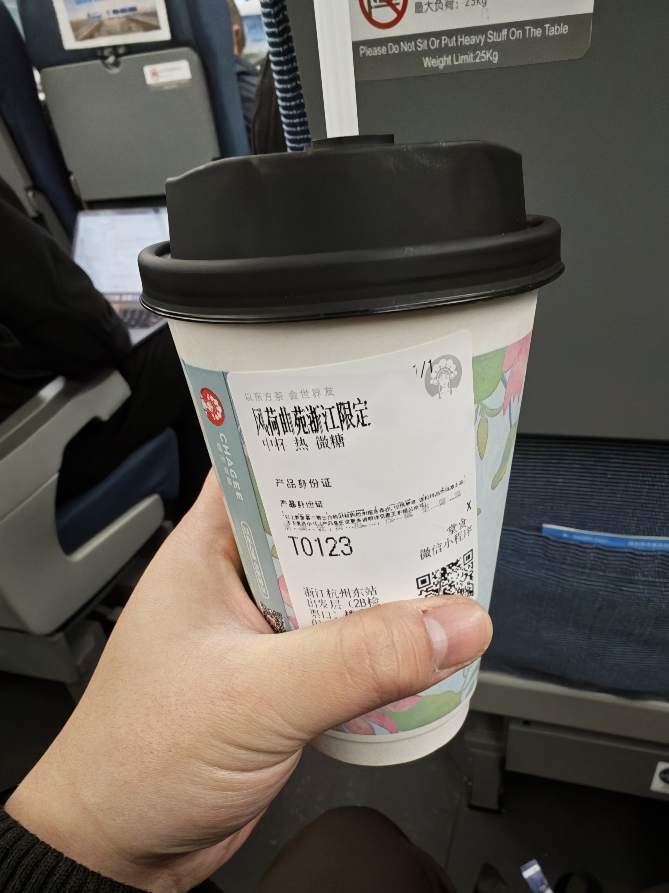
最后一杯——离杭，向西湖说了句「下次见」
路边有个蓝色的配电箱，上面画着一个卡通小女孩，举着牌子写：「再见 Good Bye」，旁边是一个对话泡泡：「I ❤ Hang Zhou」。
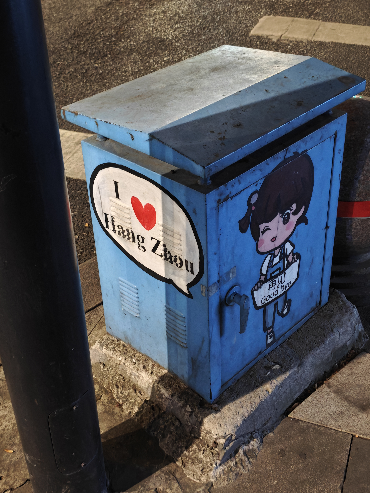
这座城市连配电箱都在说再见，又在说期待
这次来，竹林走过了，西湖也看了，黑神话朝圣了，鸡尾酒喝了两家，面吃了三碗，咖啡喝了一杯极其认真的。
杭州够大，大到一条中山中路就能走出好几个故事，一家酒吧能把整座城的气质装进一杯酒里，一家咖啡馆能让你认真对待一粒豆子，一个游戏展厅能让你站在那里忘记时间。